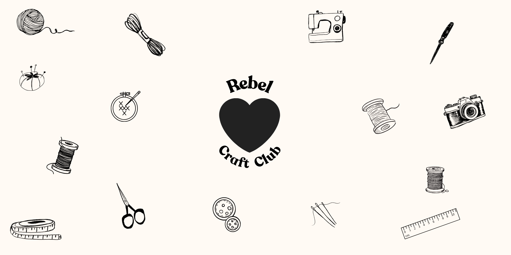
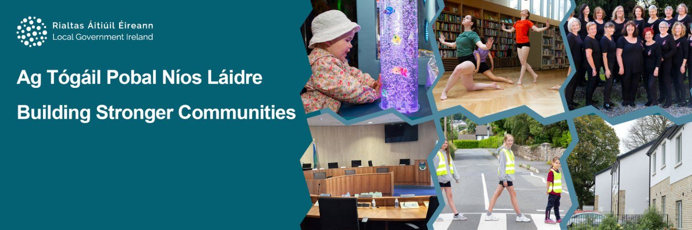
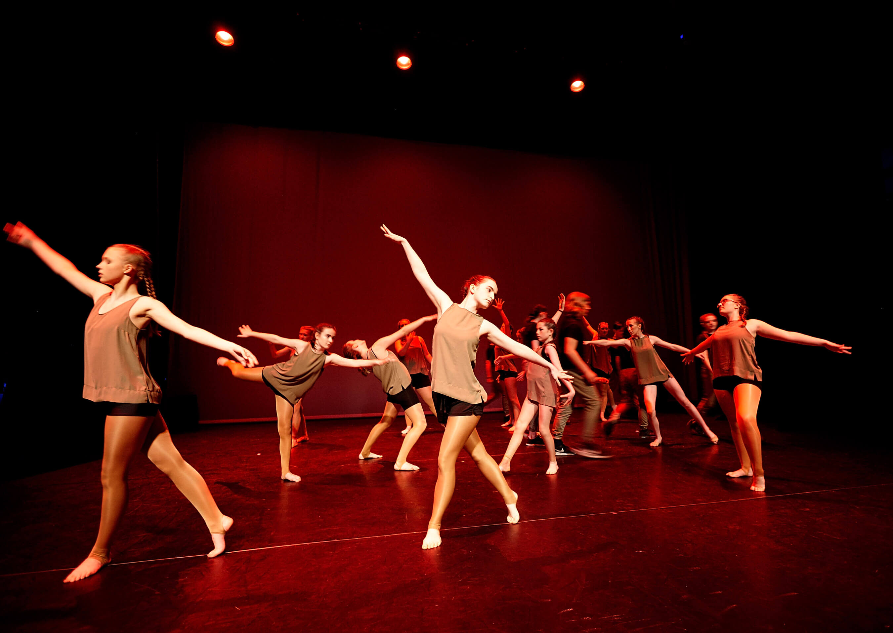
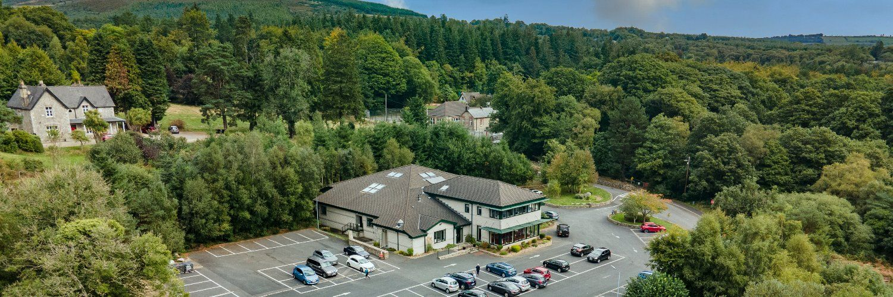
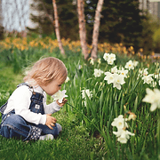

Kids Activities in Wicklow
Browse 53 kids activities and classes in Wicklow. Popular categories in Wicklow include Parent-and-toddler, Music, Football.
Browse activities in Wicklow by category
Browse activities in Wicklow by town
Harmonics Music School
Harmonics Music School offers one-to-one lessons for adults and children in a welcoming, safe and supportive environment. If you're feeling nervous or anxious, the school is there for you every step of the way: all teachers are handpicked, Garda vetted, Tusla certified, and follow a strict child safeguarding policy. Locations in Greystones and Kilcoole.
View full details →
Hedge School Wicklow
Master the Art of Bread Making at Hedge School Wicklow Step into the heart of Wicklow and discover the deeply satisfying craft of artisan bread making. Whether you are a complete beginner or looking to perfect your crust, this intimate, hands-on workshop at Hedge School Wicklow will guide you through the alchemy of flour, water, salt, and yeast. What to Expect Hosted in a cozy, welcoming environment, our classes are strictly limited to 4 participants . This small group size ensures you receive personalized, step-by-step guidance from our expert baker. During this immersive workshop, you will: Learn the Fundamentals: Understand the science of fermentation, hydration, and flour selection. Get Hands-On: Master essential techniques for mixing, kneading, shaping, and scoring your dough. Bake to Perfection: Learn the secrets to achieving the perfect oven spring, golden crust, and airy crumb. Enjoy the Fruits of your Labor: Gather with your fellow bakers to taste your fresh loaves with local Wicklow butter and preserves. Class Details Capacity: Maximum of 4 people per session (perfect for individuals, couples, or small groups of friends). Skill Level: Beginners and intermediate bakers are equally welcome. What’s Included: All ingredients, baking equipment, a recipe booklet to take home, and refreshments. Plus, you’ll leave with your own freshly baked artisan loaves! Note: Spaces are highly limited due to our small class size. Book your bench today and bring the timeless aroma of freshly baked artisan bread into your own kitchen!
View full details →

Rebel Craft Club
Rebel Craft Club organises social craft sessions throughout the year to help you rediscover your inner artist. It's about making space for adults to create, connect, and not take it too seriously - come for the craft, stay for the chat. This is the right place for you if you never liked colouring inside the lines, you start 10 projects at a time and only finish 1, you think you're not creative, or you simply want to connect with other people in your community. Zero experience needed - these are beginner-friendly social craft sessions, and the whole point is to have fun with it.
View full details →

Bloom Baby Classes Wicklow and South Dublin
Classes suitable from 6 weeks to 14 months, or until baby begins to confidently walk. Venues in Dun Laoghaire, Blackrock, Mount Merrion, Bray, Greystones, Wicklow Town & Arklow. We use catchy music and beautiful bespoke props to support baby's development in all areas. With a strong focus on parent and baby bonding, we encourage lots of eye contact and cuddles throughout class. There is also time for those much-needed mum chats, of course!
View full details →
Arklow Library
Arklow Library offers fantastic groups for babies and kids. Parent and Toddler Group: every Monday, 10.30am. Family Fun Day: every Saturday, 11.30am (stories, games and crafts for children of all ages).
View full details →Baltinglass Parent, Baby and Toddler Group
Baltinglass Parent, Baby and Toddler Group Wicklow is also known as the Stay and Play Group. It is always welcoming new members (mums, dads, grandparents and carers) and babies, toddlers and preschoolers. They host fun seasonal events such as Halloween and Christmas parties. They also have fun and educational groups attend at times so keep an eye on their socials. Something for the mums, as they also host a women's group too. So perfect for meeting new people and getting some well needed time to recharge. Past activities included painting and talks on interior design. Check out their social media to stay up to date. Location: Old School, Church Lane, Baltinglass, Ireland Day/Time: Every Tuesday at 10.00am -11.30am
View full details →

Blessington Library
Blessington Library offers fantastic groups for babies and kids. Tummy Time (0-12 months): every Thursday, 11.30am. Toddler Time (1-3 year olds): every Friday, 11.30am. Story Time (3-6 year olds): every Saturday, 11.30am. Children's Book Club: first Thursday of the month, 7pm.
View full details →Dunlavin Parent, Baby and Toddler Group Wicklow
Dunlavin Baby & Toddler Group is run by local volunteer parents in Dunlavin. Everyone is welcome! They run a great list of activities for the kids from dancing, storytime and sensory play days so a very popular class with the kiddies. Location: take place in Seomra, Imaal Hall, Dunlavin. Day/Time: Every Thursday at 10:00 – 12:00 during school term time 💶 Cost: FREE
View full details →Fitclub
Fitclub & Playball offer a unique experience for parents and children, combining movement and play for all the family - a great way to stay active together. Classes start with a warm-up suited to all ages, then split: parents go outside for a circuit-style fitness class, while children stay inside for a fun Playball class with a different coach. Playball is a great way for children to learn the movement and skills required for all sports as they get older. Fitclub runs every Monday and Wednesday, 4:30-5:30pm, at St Patrick's National School in Greystones. Anyone above the age of 3 is welcome to try the class, and all adults are welcome - you don't need to be a parent to try our fitness classes. Just bring a bottle of water and get ready to sweat.
View full details →
Fyi Dance Club
FYI Dance Club is a dynamic, community-driven dance collective dedicated to creativity, collaboration, and growth. FYI provides a welcoming space for dancers of all levels to train, create, and perform across a range of street and contemporary styles, from Caregiver and Me up to Youth Company level. The club champions youth development, artistic expression, and positive culture, supporting emerging dancers and choreographers through classes, workshops, and performance opportunities. With a strong focus on inclusivity and community impact, FYI Dance Club empowers members to build confidence, skill, and connection through movement. Based in Wicklow Town and Rathnew.
View full details →Gentle Start Collective
A range of movement classes for babies, toddlers, and parents and caregivers. Nothing special needed for the class, just good vibes.
View full details →
Glendalough/Brockagh Parent, Baby and Toddler Group
Glendalough Parent and Baby & Toddler Group, also known as Bright Stars, is hosted by Brockagh Resource Centre. Come along to our baby and toddler group on Wednesday mornings at 10.30am - each week the group provides a welcoming and lively space for parents and children to gather and grow. Activities include messy play, story and song, games (with guest speakers), snacks, and tidy-up, allowing both you and your child to meet friends, explore new things, and learn. For some parents, grandparents and carers, the weekly catch-up and opportunity for children to play and make new friends is enough - for others, the support builds confidence in their parenting role. Call 0404 45600 with any questions. Location: Brockagh Resource Centre, Laragh House, Brockagh, Glendalough, Co. Wicklow. Day/Time: every Wednesday, 10.30am-12.15pm, during school term time. Cost: €5.50 per family.
View full details →Greystones Parent, Baby and Toddler Group
Greystones Parent, Baby & Toddler Group has two groups depending on your little one's age and whether a toddler will be attending too. Little Friends Parent and Baby Group is something of a 'starter' group, for parents and new babies who are not yet walking - lay your baby on the cosy duvet, have a cup of tea or coffee and some homemade cake, and meet and chat with other mums, making some lifelong friends. Day/Time: every Tuesday, 10.30am-12pm (during term time). Cost: €2. Location: Greystones Nazarene Community Church, Burnaby Lawns, Co. Wicklow, A63 YD27. Little Friends Baby Graduate Group is a closed group for babies (and parents) who start walking and can no longer attend the first group, or for mums who have another baby and need to bring a toddler along - kept closed so it doesn't get too big for one person to run. Day/Time: every Wednesday, 10.30am-12pm (during term time). Cost: €2. Location: Greystones Nazarene Community Church, Burnaby Lawns, Co. Wicklow, A63 YD27.
View full details →Greystones Presbyterian Church Parent, Baby and Toddler Group
Greystones Parent, Baby & Toddler Group, hosted by the Presbyterian Church, is a popular playgroup for children and their parents/minders - everyone is welcome, with coffee and tea for the grown-ups and fruit, biscuits and music for the kids. Day/Time: every Wednesday, 10-11.30am (during term time). Cost: €3.50. Location: Presbyterian Church, Trafalgar Rd, Rathdown Lower, Greystones, Co. Wicklow.
View full details →

Love Life Nurture Doula and Baby Massage
My classes are based in Wicklow Town and are a small group of around 5 to 6 moms which makes for a nice intimate class where everyone can really get to know each other. The class starts at 10:30am and runs for about 90 min. It's a really relaxed baby led class (baby is the boss). I will provide everything you need (oils, handouts, blankets, tea/coffee and treats). The layout is as follows: Introductions followed by baby massage strokes. Discuss different topics on baby massage including massages for the relief of colic/wind, benefits of infant massage, how to read your baby’s cues etc. We have a tea/ cake break and photo opportunity. Then we discuss other parenting topics either picked by me or someone from the group. The 6th week is a coffee date in town.
View full details →Musical Maestros Wicklow
Musical Maestros offers age-specific music classes for babies and toddlers in Wicklow Town - a fun, friendly, interactive music class for you and your baby and/or toddler. Classes include live piano, bubbles, puppets, stories, parachute, action songs, nursery rhymes and instruments, with all songs sung live. A great way to spend one-on-one bonding time with your little one, and for little ones to mix with their peers too. Location: SpotLight Studios, The Anchorage, Corporation Murragh, Wicklow, A67 XR58. Day/Time: currently Monday and Friday mornings - check our Instagram to stay up to date with terms.
View full details →Newtownmountkennedy Parent, Baby and Toddler Group
Newtown Mount Kennedy Primary School Parent, Baby & Toddler Group meets every week during term time. To register your interest you must call Aisling Gillick 086 2434741 The group offers parents a chance to meet new parents/carers while the kids get a snack, play, practicing rhyming and listen to stories. Day/Time: Every Thursday from 9.00-10.00 (during term time) Location: Newtownmountkennedy Primary School, Newtown Mt. Kennedy, Newtown Mount Kennedy, Co. Wicklow, A63 YW86 ☎️ Contact Aisling Gillick to register your interest 086 2434741
View full details →Scoil Rince Fáinne Irish Dancing for kids
Irish dance classes for boys and girls aged 3+, available in two locations: Tuesdays 5pm at New Court School Hall, and Fridays 4.30pm at Bray Bowl Studios. First class free. Scoil Rince Fáinne is an established Irish dance school in Bray - Regional, All Ireland, World Cup and medal-winning, taught by three champion teachers. Garda vetted and insured. Classes for beginners through to champion dancers.
View full details →Snuggle Bugs Sensory Play
Snuggle Bugs Sensory Play is based in St Brigid's Hall, Rathnew. We welcome moms, dads, nannies, minders and all the special ones in your little one's life. Come spend 75 minutes of quality time together doing carefully planned, developmental, age-appropriate, fun, playful activities - learning through play is what it's all about.
View full details →Spotlight Studios
Spotlight Studios offers fun and rewarding classes for everyone - children, teens and adults alike - from performing arts to film & TV creation, acrobatic arts, sewing, costume design, singing and lots more. Parents are not required to stay. For art classes only, we recommend older-type clothing in case of spills etc.
View full details →Tinahely Parent Baby and Toddler Group
Come along to our monthly Parent, Baby and Toddler Group at 'The Farm Shop', Tinahely, Co. Wicklow. On occasion the group is hosted by guests such as Claire from 'Wellness by Meadows', who teaches Baby Massage and Baby Reflexology classes. We meet once a month, 10.30-11.30am, in The Farm Shop café - tea/coffee and a scone, €5.95. Afterwards, if parents would like to use The Play Barn's fun facilities, the cost is €7.50 per child over 16 months. It's a lovely way to meet other parents, babies and toddlers in your area. Stay up to date with the group on social media.
View full details →Wellness by Meadows
Our Baby Massage Classes usually run for a 5-week term, Wednesday mornings, 10-11.30am, here at Wellness by Meadows, just outside Tinahely, Co. Wicklow, Y14 VY70. Baby massage provides numerous physical, psychological and emotional benefits for babies and their families. Each week you'll learn different massage strokes that can help relax and soothe your baby, aid digestion to relieve wind, colic and constipation, help baby sleep well, and teach your baby body awareness. Your baby will also enjoy the songs and rhymes throughout the class. Connecting with other parents in these classes is another big plus, with time for a cuppa and chat at the end of each class. Class sizes are kept small. We can also accommodate 1:1 classes, both parents attending together, and grandparents may also like to attend - we cater for babies with special needs too. Handouts and oil are provided, and I recommend wearing comfy clothes for you and baby - just bring whatever you usually bring with your baby and a warm blanket to wrap baby in. Classes are baby-led, with lots of time for feeding, changing and the occasional nap. Course investment is €120 for the 5 weeks (you can also claim back most of the cost through your health insurance policy, depending on your plan).
View full details →Wicklow Parent, Baby and Toddler Group
Wicklow's Family Club offers a community spirit to meeting new parents with your little ones. This parent and toddler group has open play time and seasonal parties and activities. Other groups often join to host special events, such as dance classes or outdoor fun with Revive Nature - definitely one to check out. Location: De La Salle Pastoral Centre, Wicklow Town, Co. Wicklow. Day/Time: every Friday, 10am-12pm (during term time). Cost: €5 per family.
View full details →
Nature Club
Nature Club is an outdoor playgroup for toddlers and kids based in Wicklow Town, for those interested in playing outdoors and exploring messy play, new skills and crafts. The garden-based session includes a mud kitchen, sand and water play, a digging pit, nature crafts and gardening activities. Suitable for ages 1-3 years (10-11am) and 1-7 years (3-4pm), on Wednesdays and Fridays. Sibling discount available, babes in arms go free. Parents/caregivers are required to stay and play - it's a wonderful opportunity to connect with your child in a nature setting. Children (and caregivers) should come dressed in old clothes or splash suits, as things can get messy and wet. Location: Wicklow Rovers Sensory Garden, Station Road, Whitegates, Wicklow Town (opposite the Fire Station & County Council buildings), Station Rd, Bollarney South, Wicklow. Runs from March to October.
View full details →Enniskerry Parent, Baby and Toddler Group
Enniskerry Parent, Baby & Toddler Group is open and welcomes mums-to-be, parents, carers and, of course, babies, toddlers and preschoolers. Let the kids have some free playtime while you have a chat and a cup of coffee. Location: Parish Hall (beside Poppies), Main Street, Enniskerry, Wicklow. Day/Time: every Thursday, 9.15-11am, during school term time. Cost: €1.50.
View full details →Moo Music Wicklow
Hello and welcome to Moo Music Wicklow, the home of moosical fun for the under-5s. We sing, we dance, we move, we learn and we have fun. Moo Music is a great fun and interactive regular music session for 0 to 5 year old children and their parents, grandparents or carers too, where the children sing, dance, play, learn and have fun while doing it. Music is an essential part of every child's development, and the 125+ original Moo Music songs used at the sessions are positive, uplifting, fun and educational. The interactive sessions help your child gain confidence and develop memory, language and coordination skills in an exciting, enjoyable and multi-sensory way - a great way to make new friends, both for the children and the adults too. Current classes: Baby Moo (non-walkers), Mini Moo (little ones confidently walking), Mixed Moo (all ages), and Moosical Messy Play (9 months-5 years). We run classes in preschools and local playgroups, as well as public classes on Wednesdays, Thursdays, Fridays and Saturdays, and also provide party entertainment for under-6s.
View full details →Turtle Tots Swimming Classes - Wexford/Wicklow
Turtle Tots lessons are truly child-centred. Each child is nurtured and activities are adapted to meet each individual’s needs. By the time you have reached the end of our baby programme we have taught you all the separate techniques and practices necessary for independent swimming. Our highly trained and skilled teachers ensure lessons are fun and sociable for everyone, whilst teaching your child essential life-saving skills. Babies from 3 months to 4.5 year olds can partake in Turtle Tot swimming lessons.
View full details →Bloom Baby Classes Wicklow and South Dublin
Classes suitable from 6 weeks to 14 months, or until baby begins to confidently walk. Venues in Dun Laoghaire, Blackrock, Mount Merrion, Bray, Greystones, Wicklow Town & Arklow. We use catchy music and beautiful bespoke props to support baby's development in all areas. With a strong focus on parent and baby bonding, we encourage lots of eye contact and cuddles throughout class. There is also time for those much-needed mum chats, of course!
View full details →Bloom Baby Classes Wicklow and South Dublin
Classes suitable from 6 weeks to 14 months, or until baby begins to confidently walk. Venues in Dun Laoghaire, Blackrock, Mount Merrion, Bray, Greystones, Wicklow Town & Arklow. We use catchy music and beautiful bespoke props to support baby's development in all areas. With a strong focus on parent and baby bonding, we encourage lots of eye contact and cuddles throughout class. There is also time for those much-needed mum chats, of course!
View full details →Bloom Baby Classes Wicklow and South Dublin
Classes suitable from 6 weeks to 14 months, or until baby begins to confidently walk. Venues in Dun Laoghaire, Blackrock, Mount Merrion, Bray, Greystones, Wicklow Town & Arklow. We use catchy music and beautiful bespoke props to support baby's development in all areas. With a strong focus on parent and baby bonding, we encourage lots of eye contact and cuddles throughout class. There is also time for those much-needed mum chats, of course!
View full details →
HoopSkool Basketball Academy 🏀
HoopSkool Basketball is Ireland's first player development programme. Introduce your child to basketball in a fun learning environment with high-quality coaches. Classes run weekly in Leopardstown, Stillorgan and Kilcoole: Tiny Ballers (5-7 years), Little Ballers (7-9 years), Shooters Academy (10-12 years), Shooters Club (13-18 years). www.hoopskoolbasketball.com
View full details →
Little Kickers Dublin South & Wicklow
Join the world's No. 1 preschool football programme, with over 100,000 children participating every week. Our play-orientated classes are fun, engaging, and nurture a love of sport from an early age. We are proud to be more than just football - while football is the tool we use, our goal is to develop the fundamentals of movement (balance, agility & coordination), fundamental movement skills (running, hopping, skipping, jumping), social skills such as listening, sharing and taking turns, and early learning concepts like numbers, colours and body parts. We have 4 different age groups to ensure children participate with their peers at around the same developmental level. Our Little Kickers programme is suitable for children aged 18 months to 2.5 years - it's a parent-toddler programme requiring active parental participation, which ensures your child gets the very best out of the sessions; learning to listen and follow instructions through engaging, fun games is the goal at this level. Our Junior Kickers classes are for 2.5 to 3.5 year olds, who are starting to get more independent at this stage - children participate more by themselves, though many will still like to have their parents close to them at the magic wall, with Play, Practice, Understand as the learning outcome. The next stage is Mighty Kickers, suitable for 3.5 to 5 year olds, where most children participate independently with parents encouraged to support from the sidelines, further developing Play, Practice, Understand. The Mega Kickers programme brings together all the learning outcomes from the previous levels, relying less on the play-orientated structure of earlier stages, with a 20-minute match at the end of each session preparing children to move onto football academies and continue their football journey. Throughout all stages, our core philosophy of Play not Push is embodied - we believe children should be gently encouraged to participate and allowed to watch if they are unsure, in the hope that seeing other children in the class participating will spur them on to join in the fun.
View full details →Little Kickers Dublin South & Wicklow
Join the world's No. 1 preschool football programme, with over 100,000 children participating every week. Our play-orientated classes are fun, engaging, and nurture a love of sport from an early age. We are proud to be more than just football - while football is the tool we use, our goal is to develop the fundamentals of movement (balance, agility & coordination), fundamental movement skills (running, hopping, skipping, jumping), social skills such as listening, sharing and taking turns, and early learning concepts like numbers, colours and body parts. We have 4 different age groups to ensure children participate with their peers at around the same developmental level. Our Little Kickers programme is suitable for children aged 18 months to 2.5 years - it's a parent-toddler programme requiring active parental participation, which ensures your child gets the very best out of the sessions; learning to listen and follow instructions through engaging, fun games is the goal at this level. Our Junior Kickers classes are for 2.5 to 3.5 year olds, who are starting to get more independent at this stage - children participate more by themselves, though many will still like to have their parents close to them at the magic wall, with Play, Practice, Understand as the learning outcome. The next stage is Mighty Kickers, suitable for 3.5 to 5 year olds, where most children participate independently with parents encouraged to support from the sidelines, further developing Play, Practice, Understand. The Mega Kickers programme brings together all the learning outcomes from the previous levels, relying less on the play-orientated structure of earlier stages, with a 20-minute match at the end of each session preparing children to move onto football academies and continue their football journey. Throughout all stages, our core philosophy of Play not Push is embodied - we believe children should be gently encouraged to participate and allowed to watch if they are unsure, in the hope that seeing other children in the class participating will spur them on to join in the fun.
View full details →Little Kickers Dublin South & Wicklow
Join the world's No. 1 preschool football programme, with over 100,000 children participating every week. Our play-orientated classes are fun, engaging, and nurture a love of sport from an early age. We are proud to be more than just football - while football is the tool we use, our goal is to develop the fundamentals of movement (balance, agility & coordination), fundamental movement skills (running, hopping, skipping, jumping), social skills such as listening, sharing and taking turns, and early learning concepts like numbers, colours and body parts. We have 4 different age groups to ensure children participate with their peers at around the same developmental level. Our Little Kickers programme is suitable for children aged 18 months to 2.5 years - it's a parent-toddler programme requiring active parental participation, which ensures your child gets the very best out of the sessions; learning to listen and follow instructions through engaging, fun games is the goal at this level. Our Junior Kickers classes are for 2.5 to 3.5 year olds, who are starting to get more independent at this stage - children participate more by themselves, though many will still like to have their parents close to them at the magic wall, with Play, Practice, Understand as the learning outcome. The next stage is Mighty Kickers, suitable for 3.5 to 5 year olds, where most children participate independently with parents encouraged to support from the sidelines, further developing Play, Practice, Understand. The Mega Kickers programme brings together all the learning outcomes from the previous levels, relying less on the play-orientated structure of earlier stages, with a 20-minute match at the end of each session preparing children to move onto football academies and continue their football journey. Throughout all stages, our core philosophy of Play not Push is embodied - we believe children should be gently encouraged to participate and allowed to watch if they are unsure, in the hope that seeing other children in the class participating will spur them on to join in the fun.
View full details →Little Kickers Dublin South & Wicklow
Join the world's No. 1 preschool football programme, with over 100,000 children participating every week. Our play-orientated classes are fun, engaging, and nurture a love of sport from an early age. We are proud to be more than just football - while football is the tool we use, our goal is to develop the fundamentals of movement (balance, agility & coordination), fundamental movement skills (running, hopping, skipping, jumping), social skills such as listening, sharing and taking turns, and early learning concepts like numbers, colours and body parts. We have 4 different age groups to ensure children participate with their peers at around the same developmental level. Our Little Kickers programme is suitable for children aged 18 months to 2.5 years - it's a parent-toddler programme requiring active parental participation, which ensures your child gets the very best out of the sessions; learning to listen and follow instructions through engaging, fun games is the goal at this level. Our Junior Kickers classes are for 2.5 to 3.5 year olds, who are starting to get more independent at this stage - children participate more by themselves, though many will still like to have their parents close to them at the magic wall, with Play, Practice, Understand as the learning outcome. The next stage is Mighty Kickers, suitable for 3.5 to 5 year olds, where most children participate independently with parents encouraged to support from the sidelines, further developing Play, Practice, Understand. The Mega Kickers programme brings together all the learning outcomes from the previous levels, relying less on the play-orientated structure of earlier stages, with a 20-minute match at the end of each session preparing children to move onto football academies and continue their football journey. Throughout all stages, our core philosophy of Play not Push is embodied - we believe children should be gently encouraged to participate and allowed to watch if they are unsure, in the hope that seeing other children in the class participating will spur them on to join in the fun.
View full details →Little Kickers Dublin South & Wicklow
Join the world's No. 1 preschool football programme, with over 100,000 children participating every week. Our play-orientated classes are fun, engaging, and nurture a love of sport from an early age. We are proud to be more than just football - while football is the tool we use, our goal is to develop the fundamentals of movement (balance, agility & coordination), fundamental movement skills (running, hopping, skipping, jumping), social skills such as listening, sharing and taking turns, and early learning concepts like numbers, colours and body parts. We have 4 different age groups to ensure children participate with their peers at around the same developmental level. Our Little Kickers programme is suitable for children aged 18 months to 2.5 years - it's a parent-toddler programme requiring active parental participation, which ensures your child gets the very best out of the sessions; learning to listen and follow instructions through engaging, fun games is the goal at this level. Our Junior Kickers classes are for 2.5 to 3.5 year olds, who are starting to get more independent at this stage - children participate more by themselves, though many will still like to have their parents close to them at the magic wall, with Play, Practice, Understand as the learning outcome. The next stage is Mighty Kickers, suitable for 3.5 to 5 year olds, where most children participate independently with parents encouraged to support from the sidelines, further developing Play, Practice, Understand. The Mega Kickers programme brings together all the learning outcomes from the previous levels, relying less on the play-orientated structure of earlier stages, with a 20-minute match at the end of each session preparing children to move onto football academies and continue their football journey. Throughout all stages, our core philosophy of Play not Push is embodied - we believe children should be gently encouraged to participate and allowed to watch if they are unsure, in the hope that seeing other children in the class participating will spur them on to join in the fun.
View full details →Little Kickers Dublin South & Wicklow
Join the world's No. 1 preschool football programme, with over 100,000 children participating every week. Our play-orientated classes are fun, engaging, and nurture a love of sport from an early age. We are proud to be more than just football - while football is the tool we use, our goal is to develop the fundamentals of movement (balance, agility & coordination), fundamental movement skills (running, hopping, skipping, jumping), social skills such as listening, sharing and taking turns, and early learning concepts like numbers, colours and body parts. We have 4 different age groups to ensure children participate with their peers at around the same developmental level. Our Little Kickers programme is suitable for children aged 18 months to 2.5 years - it's a parent-toddler programme requiring active parental participation, which ensures your child gets the very best out of the sessions; learning to listen and follow instructions through engaging, fun games is the goal at this level. Our Junior Kickers classes are for 2.5 to 3.5 year olds, who are starting to get more independent at this stage - children participate more by themselves, though many will still like to have their parents close to them at the magic wall, with Play, Practice, Understand as the learning outcome. The next stage is Mighty Kickers, suitable for 3.5 to 5 year olds, where most children participate independently with parents encouraged to support from the sidelines, further developing Play, Practice, Understand. The Mega Kickers programme brings together all the learning outcomes from the previous levels, relying less on the play-orientated structure of earlier stages, with a 20-minute match at the end of each session preparing children to move onto football academies and continue their football journey. Throughout all stages, our core philosophy of Play not Push is embodied - we believe children should be gently encouraged to participate and allowed to watch if they are unsure, in the hope that seeing other children in the class participating will spur them on to join in the fun.
View full details →

SENSEable Tots Sensory Class in Dublin and Wicklow
SENSEable Tots is a fun sensory class for 6 months to 4 years. Classes are offered in Shankill and Greystones - enjoy a supportive and relaxed environment where children can explore different sensory materials and engage in fun action songs, using their imaginations, laughing and socialising with other children. Time: Mondays at 10am in Shankill, Stonebridge Community Centre. Time: Thursdays at 10am in Greystones, Nazarene Church. Check out our social media for locations and to stay up to date with new terms. Children must be accompanied by a parent/guardian who must stay for the duration of the class. It's recommended that you bring a change of clothes.
View full details →Fyi Dance Club
FYI Dance Club is a dynamic, community-driven dance collective dedicated to creativity, collaboration, and growth. FYI provides a welcoming space for dancers of all levels to train, create, and perform across a range of street and contemporary styles, from Caregiver and Me up to Youth Company level. The club champions youth development, artistic expression, and positive culture, supporting emerging dancers and choreographers through classes, workshops, and performance opportunities. With a strong focus on inclusivity and community impact, FYI Dance Club empowers members to build confidence, skill, and connection through movement. Based in Wicklow Town and Rathnew.
View full details →Chime in & Play
Various locations, dates and times - see website for more information. Some venues operate a summer term/classes. You and your child will build creativity, confidence and lifelong friendships. Our classes are specially designed to help young children learn and develop through playing and music. Our classes also help you learn about your child, how to participate in and encourage their development, while enjoying the simple pleasure of playing together.
View full details →Moo Music Wicklow
Hello and welcome to Moo Music Wicklow, the home of moosical fun for the under-5s. We sing, we dance, we move, we learn and we have fun. Moo Music is a great fun and interactive regular music session for 0 to 5 year old children and their parents, grandparents or carers too, where the children sing, dance, play, learn and have fun while doing it. Music is an essential part of every child's development, and the 125+ original Moo Music songs used at the sessions are positive, uplifting, fun and educational. The interactive sessions help your child gain confidence and develop memory, language and coordination skills in an exciting, enjoyable and multi-sensory way - a great way to make new friends, both for the children and the adults too. Current classes: Baby Moo (non-walkers), Mini Moo (little ones confidently walking), Mixed Moo (all ages), and Moosical Messy Play (9 months-5 years). We run classes in preschools and local playgroups, as well as public classes on Wednesdays, Thursdays, Fridays and Saturdays, and also provide party entertainment for under-6s.
View full details →Moo Music Wicklow
Hello and welcome to Moo Music Wicklow, the home of moosical fun for the under-5s. We sing, we dance, we move, we learn and we have fun. Moo Music is a great fun and interactive regular music session for 0 to 5 year old children and their parents, grandparents or carers too, where the children sing, dance, play, learn and have fun while doing it. Music is an essential part of every child's development, and the 125+ original Moo Music songs used at the sessions are positive, uplifting, fun and educational. The interactive sessions help your child gain confidence and develop memory, language and coordination skills in an exciting, enjoyable and multi-sensory way - a great way to make new friends, both for the children and the adults too. Current classes: Baby Moo (non-walkers), Mini Moo (little ones confidently walking), Mixed Moo (all ages), and Moosical Messy Play (9 months-5 years). We run classes in preschools and local playgroups, as well as public classes on Wednesdays, Thursdays, Fridays and Saturdays, and also provide party entertainment for under-6s.
View full details →Moo Music Wicklow
Hello and welcome to Moo Music Wicklow, the home of moosical fun for the under-5s. We sing, we dance, we move, we learn and we have fun. Moo Music is a great fun and interactive regular music session for 0 to 5 year old children and their parents, grandparents or carers too, where the children sing, dance, play, learn and have fun while doing it. Music is an essential part of every child's development, and the 125+ original Moo Music songs used at the sessions are positive, uplifting, fun and educational. The interactive sessions help your child gain confidence and develop memory, language and coordination skills in an exciting, enjoyable and multi-sensory way - a great way to make new friends, both for the children and the adults too. Current classes: Baby Moo (non-walkers), Mini Moo (little ones confidently walking), Mixed Moo (all ages), and Moosical Messy Play (9 months-5 years). We run classes in preschools and local playgroups, as well as public classes on Wednesdays, Thursdays, Fridays and Saturdays, and also provide party entertainment for under-6s.
View full details →Shoreline Leisure - Bray Children's Swim Lessons
Progressive 8-week swim terms (Levels 1-5) for ages 4-12, small groups with qualified instructors.
View full details →David Lewis Golf - Junior Golf Camps Greystones
After-school golf programme (Sept-May, ages 7+) and Easter/summer camps at Greystones Golf Course; 140+ weekly juniors.
View full details →Greystones Lawn Tennis Club - Junior Play N Stay
Junior practice sessions Thursday afternoons for various age groups; €24-48 per 12 weeks, 1 free trial for non-members.
View full details →Shoreline Leisure - Greystones Swim School
Structured swim programme for ages 4+, plus Parent & Tadpole (4-12 months) and lane training/junior lifeguard pathways.
View full details →Yoga with Michelle - Kids Yoga Greystones
Kids Yoga at St Patrick's Church, Fridays 2:15-3:15pm; playful movement, breathwork and mindfulness; €50/4-week block.
View full details →Arklow Gymnastics Club
25+ year gymnastics club with recreational, development and competitive squads; classes currently full for the season.
View full details →Fight Fit Dojo - Blessington
Blessington Kenpo Club (5+), MMA Basics, BJJ (12+) and Tae Kwon Do, all based at Fight Fit Dojo.
View full details →Junior Einsteins - Afterschool Science Club, Blessington
8-week hands-on STEM afterschool club for 1st-6th class, Wednesdays at St Josephs Hall; €100.
View full details →Blessington Music - Kids Instrument Lessons
Harp, bodhrán, tin whistle, guitar and ukulele lessons for kids, plus workshops and camps.
View full details →Manor Kilbride Music School
One-to-one children's instrument lessons across woodwind, brass, strings, piano and voice; non-competitive.
View full details →No classes match your filters.